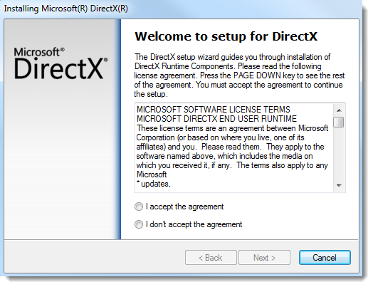

Overview
This article will take you through installing the necessary tools to develop games using Torque 3D. We have separated this article into two sections depending on the focus of your team. The first section is oriented towards level designers, artists, and people who are new to Torque 3D and do not need to dive into the source code. The second section is oriented towards programmers who will be working with the source code of the engine.
New Users, Scripters, and Artists
Now that you have decided to work with Torque 3D, this section will take
you through setting up your environment.
If you are using the demo or are primarily using the tools, the setup of Torque 3D is simple.
You need the latest DirectX runtime. You can download
this
here. Depending on your User Account Control settings in Windows Vista or
Windows 7, you may be prompted to allow the installer to run.

Read the agreement and choose to accept it. Click Next to install the latest version of DirectX.
Also, make sure that your video and sound drivers are up-to-date with the latest versions. Doing an Internet search on the video or graphics card or visiting the manufacturer web site will usually lead to downloads of the latest drivers. Once these have been installed, you are ready to hit the ground running. Below are some of the common hardware vendor site. Check your system requirements to find your vendor and hardware model.
Common Graphic Drivers
Common Sound Drivers
Programmers
When you buy the T3D license, you receive access to the complete engine source code. This allows you to customize the engine to meet your project needs.
This tutorial will guide you step-by-step through the process of setting up your development environment. Once set up correctly, you will be able to edit and recompile your T3D engine source code.
For this tutorial, we will be using the free Microsoft Visual Studio C++ ("VC++") Express Edition as our development environment.
This tutorial explains how to:
- Install VC++ Express.
- Download the required files for a successful engine build.
- Set up the environment dependent files correctly.
- Make your first successful engine build.
To successfully compile the engine source code, you will need to
download these files.
How to download and install the DirectX SDK.
Part 3 - Installing Visual C++ Express
Instructions for installing Visual Studio C++ 2008 Express.
Instructions for installing Visual Studio C++ 2010 Express.
Part 4 - Setup the Development Environment
Setting up the Visual Studio C++ 2008 environment.
Setting up the Visual Studio C++ 2010 environment.
How to compile a T3D project.
|